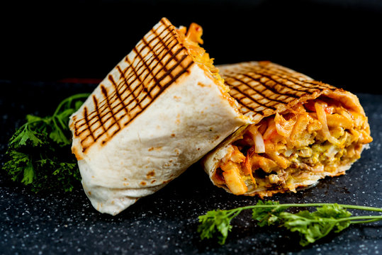

Tacos

Délicieux Tacos Français
Vous aussi réalisez ce délicieux tacos facilement lol
Ingrédients
- Fajitas au blé
- Boeuf haché
- Frites
- Crème
- Tomates
- Mayonnaise
- Emmental Rapé
- Faites cuire le boeuf haché dans une pôele
- Ajoutez la crème et l'emmental dans une casserole jusqu'à obtenir un mélange homogène
- Faites cuire vos frites mdr
- Coupez vos tomates
- Dans une galette ajoutez tous les ingrédients et recouvrez de mayonnaise de gros porc
- Fermez la galette et passez la à la poêle 2min de chaque côté
- Servez bande de salopes